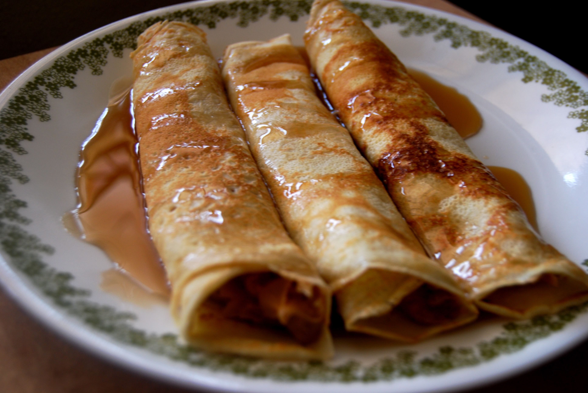

Home
Pancakes

Description
Basic but versatile thin pancakes, easy to make.
Ingredients
- Milk 250ml
- Flour 135gr
- Eggs 2
- Vanilla essence 1tsp
Steps
- Put the flour in a bowl and add the eggs an the milk, mix well.
- Let the mix hydrate in the fridge for about 5 min.
- Put a ladle of mix in a previously heated non-stick pan
- Let it cook for 1 min and flip it.
- Let the other side cook for another minute and put it on a plate.
- Repeat the steps 3 to 5 for each pancake.